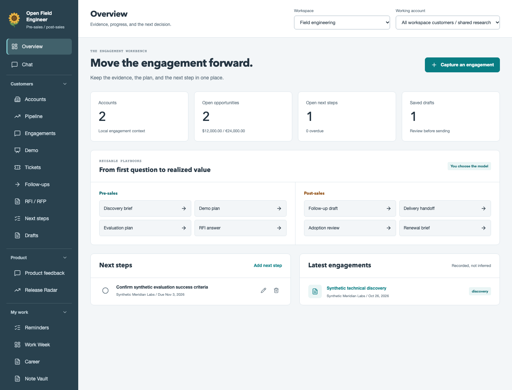

Open source. Out in the field.
Less busywork.
More fieldwork.
For the people who turn technical possibilities into something customers can actually use.
We're building open-source tools for pre-sales and post-sales. Less time stitching things together. More time doing the work that matters.
Open Field
Engineer.
Your whole field day.
One workbench.
Customer context, calls, demos, tickets, follow-ups, and knowledge. A provider-neutral harness for the work before and after the sale, on the web and desktop.
The repository is currently private. GitHub access is required.


Bring your own AI.
OpenAI, Anthropic, Gemini, or an OpenAI-compatible endpoint, including local models.
Work with your tools.
Connect Slack, GitHub, and Zendesk, alongside custom REST APIs and MCP tools.
Keep a hand on the wheel.
Review and approve tool calls. Keep customer context, evidence, and next steps together.
Good tools should be shared.
Open tools.
Common ground.
Sales engineers, solutions architects, and technical account teams solve different problems. A lot of the work around those problems is shared.
We want to make that work easier, with tools you can understand, adapt, and help improve. Open Field Engineer is where we're starting.
See what we're building